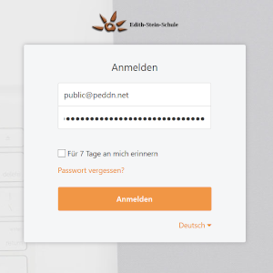

Dieser Dienst deckt im Moment nur den absolut notwendigen Dateiaustausch ab. Ich arbeite weiterhin an
einer Lösung für Videochat, einem Schwarzen Brett und einem Sozialen Netz (Facebook, Whatsapp
Alternative), um schnell und unkompliziert mit den Schülern chatten zu können. Das dauert allerdings
noch ein bis zwei Tage. Ich bitte daher um etwas Geduld ;)
So nutzt man den Seafile Dateidienst
Vorgehen als Lehrer
Der Seafile Dateidienst ist ganz ähnlich aufgebaut, wie Dropbox, Google Drive oder ähnliche
"Cloud"-Dienste. Man hat grundsätzlich zwei Möglichkeiten, den Dienst zu nutzen: Einmal über die
Weboberflache unter
cloud.foerderzentrum-aichach.de oder man installiert ein kleines Programm auf
seinem Computer. Dieses Programm übernimmt dann die Dateisynchronisation automatisch und man muss nichts
mehr im Browser hoch- oder herunterladen.
Jede Lehrkraft hat bereits einen Account. Der Benutzername entspricht der Email-Adresse, so wie sie in
der Lehrerliste angegeben wurde.
Für jede Klasse ist ebenfalls ein Account eingerichtet. Die Benutzernamen sind in folgender Tabelle
nachzulesen:
| Benutzername |
| Benutzername |
| klasse_1a@foerderzentrum-aichach.de |
| klasse_1b@foerderzentrum-aichach.de |
| klasse_1aa@foerderzentrum-aichach.de |
| klasse_1ab@foerderzentrum-aichach.de |
| klasse_2a@foerderzentrum-aichach.de |
| klasse_2b@foerderzentrum-aichach.de |
| klasse_3a@foerderzentrum-aichach.de |
| klasse_3b@foerderzentrum-aichach.de |
| klasse_4a@foerderzentrum-aichach.de |
| klasse_4b@foerderzentrum-aichach.de |
| klasse_5a@foerderzentrum-aichach.de |
| klasse_5b@foerderzentrum-aichach.de |
| klasse_6@foerderzentrum-aichach.de |
| klasse_7@foerderzentrum-aichach.de |
| klasse_8@foerderzentrum-aichach.de |
| klasse_9@foerderzentrum-aichach.de |
Jeder Lehrer hat 2 "Bibliotheken" (Orte an denen Dateien und Ordner gespeichert werden können). Es gibt
eine "Lehrer"-Bibliothek. In dieser haben die Schüler nur Leserechte, können also nichts verändern oder
löschen. Daneben gibt es auch eine "Schueler"-Bibliothek. Hier können die Schüler Dateien hochladen,
löschen, verschieben und Ordnerstrukturen anlegen. Es könnte möglich sein, dass hier Disziplinprobleme
auftreten, da jeder Schüler innerhalb einer Klasse alle Dateien ändern kann, da es ja nur einen Account
pro Klasse gibt. Es besteht allerdings die Möglichkeit gelöschte Dateien wieder herzustellen und ihr
habt auch als Lehrer Schreibrechte in der Schüler-Bibliothek. Das bedeutet, ihr könnt dort ebenfalls für
Ordnung sorgen und bei Bedarf eingreifen.
1.

Zuerst meldet ihr euch an.
Hier seht ihr eure Bibliotheken. Es wird automatisch eine Bibliothek namens "Meine Bibliothek"
erstellt, die ihr natürlich nutzen könnt, aber nicht müsst. Ihr könnt auch selbstverständlich
weitere Bibliotheken anlegen, allerdings solltet ihr damit vielleicht warten, bis ihr euch ein
bischen besser mit dem System auskennt.
Klickt nun auf eure Lehrer-Bibliothek.
Hier seht ihr den Inhalt der Lehrer-Bibliothek. An dieser Stelle empfiehlt es
sich, eine
Ordnerstruktur nach Fächern anzulegen. In diesen Ordnern könnt ihr nun eure Arbeitsblätter und
Aufgaben hochladen.
Klickt anschließend links auf 'Meine Bibliotheken' und öffnet dann die
Schüler-Bibliothek.
Hier seht ihr den Inhalt der Schüler-Bibliothek. An dieser Stelle empfiehlt es
sich, eine Ordnerstruktur nach Schülern anzulegen. In diesen Ordnern können dann die Schüler
ihre
bearbeiteten Aufgaben oder andere Dateien hochladen. Hier habt ihr auch "die Macht" und könnt
Dateien in die richtigen Ordner verschieben oder anderweitig für Ordnung sorgen.
Dies sind allerdings nur Vorschläge. Habt keine Hemmungen, diese Bibliotheken so zu nutzen, wie es für euch am hilfsreichsten ist. Es gibt sehr viele denkbare Organisationsmöglichkeiten und man sollte einfach zusammen mit den Schülern viel ausprobieren!
Nun müsstet ihr noch eure Eltern (am besten telefonisch) über das Passwort eures Klassenaccounts
informieren, damit sich die Schüler einloggen oder etwas hochladen können.
Der Dienst ist unter der Internetadresse
https://foerderzentrum-aichach.de erreichbar. Dort
müssen die Kinder auf
'zu den Klassenzimmern' klicken und sich etweder
anmelden (für Fortgeschrittete) oder die Links zu den einzelenen Klassen nutzen.
Vorgehen als Schüler
Die Schüler müssen nach dem einloggen auf 'Für meine Gruppen' klicken und dann
auf die Klassengruppe. Anschliessend erscheinen die Lehrer- und
Schüler-Bibliothek.